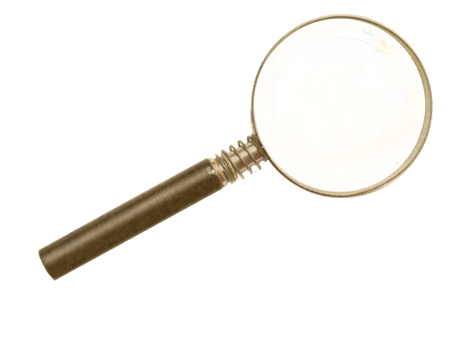

Concept Art and Screenshots
1 / 4
2 / 4

3 / 4

4 / 4

Multimodal Crime Mystery game
Private Investigators is a project part of the course DH2413 Advanced Graphics and Interaction at KTH. The course has different themes each year and for our project it was "Socially-distant Interaction".
Private Investigators is a concept for an asymmetric cooperative crime mystery game where players collaborate to solve a crime together as quickly as possible. Each player can play as one of several unique roles and together the players collect clues and use their deductive skills to make an accusation, revealing the guilty suspect and other details of the crime.
Our design process began as multiple brainstorming sessions where we generated possible ideas for the project first through the application of the “yes, and” technique, and by later refining them by filtering the features of each idea we liked the most. Our proposal has since been developed also based on the synergies between modalities of interaction and different graphic techniques we came up with. To define more in detail the features as well as the game mechanics, our plan is to involve potential players in a process of participatory design.
Asymmetrical co-op fits our socially-distant criteria by enabling players to maintain the current restrictions as well as encouraging the players that can, to get exercise. For players that have physical limitations to leave the house there are other roles so they can also join the adventure. This makes the experience inclusive and accessible to players with disabilities.
The development of the game was modular, in that the individual interaction modalities and advanced graphic techniques will be implemented as standalone features and only those that best suit the game concept were included in the final prototype. We applied Scrum as an agile method, alongside iterative prototyping to the development process.
One of the main features associated to the Genius role is the presence of AR in the game. It enables original and entertaining interaction modalities, which keep even a home-based player involved in the progress of the investigation. The user can select a piece of evidence from the inventory, place it in the surrounding environment, scale it to the desired dimensions and inspect its surface with a virtual UV lamp in search for potential clues. Unlocking the clues hidden on the different items will help bring the investigation forward.